Craving Kitchen
CK v0.4 線上美術 source of truth：三位可選醫師全動作狀態（21 組向量立繪）、六位病人到診至離院生命週期狀態（30 組向量立繪）、診間空間、Cooking Mode 與麻婆豆腐料理道具。GitHub web build 全數採用輕量 SVG，零外部相依性。


Doctor Full-Body Animation States (21 SVGs)
每位醫師具備獨立動作動態識別：Entrance（出場）、Idle（待命）、Prep（備料）、Cut（切配）、Cook（火候掌杓）、Serve（上菜）、Ultimate（角色大招）。三位醫師的出場與大招特效具備顯著視覺差異。
DR. SPEED (快刀醫師) — 閃電備料
Entrance

Idle
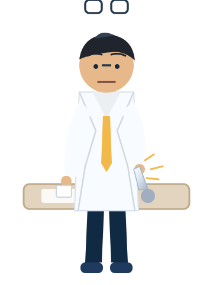
Prep
Cut
Cook
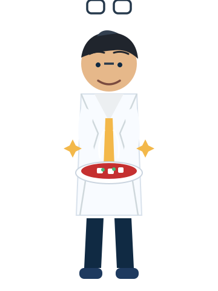
Serve
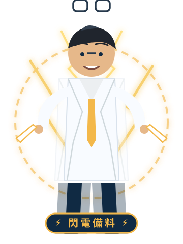
閃電備料
DR. HEAT (火候醫師) — 精準火候
Entrance
Idle
Prep
Cut
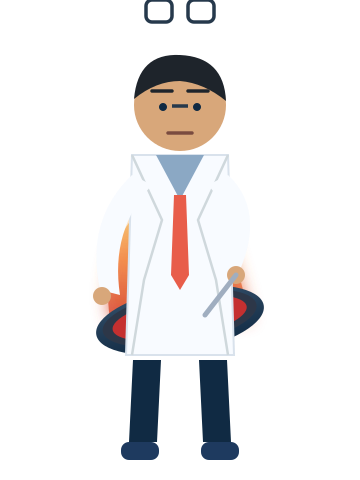
Cook
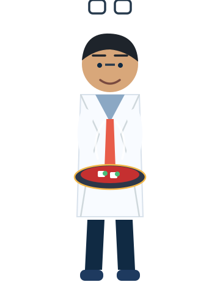
Serve
精準火候
DR. STRATEGY (處方醫師) — Craving 處方
Entrance
Idle
Prep
Cut
Cook
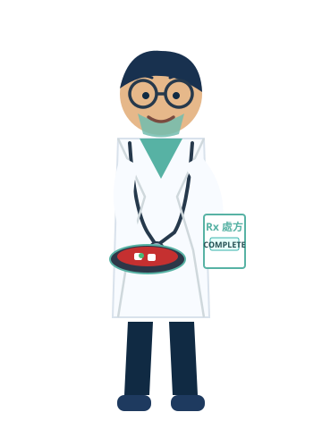
Serve
Craving 處方
Patient NPC Lifecycle States (30 SVGs)
六位病人角色均具備完整的到診生命週期動作：Walk in（入場）、Sit（入座候診）、Order（點餐激動反應）、Eat（美味用餐）、Leave（滿足離院）。
1. 焦慮上班族 (Office Worker)

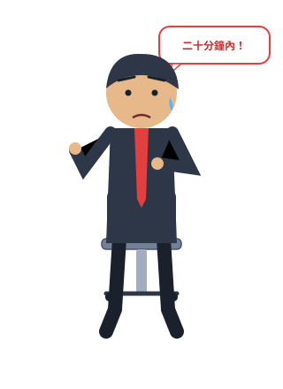
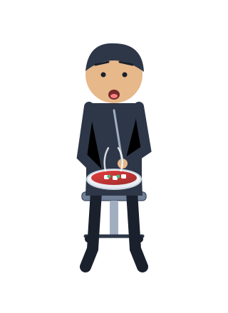
2. 熬夜學生 (Student)
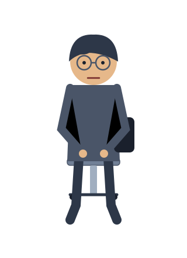
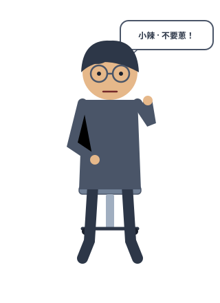
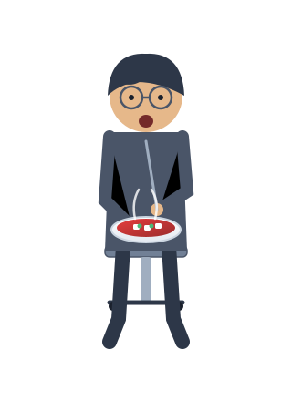
3. 長班司機 (Driver)
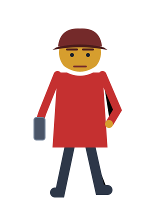
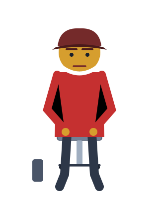
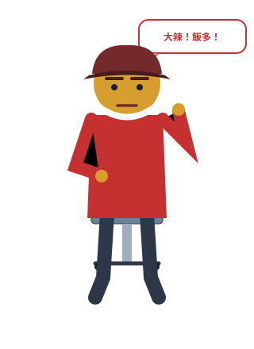
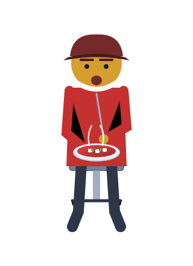
4. 熱情阿姨 (Auntie)
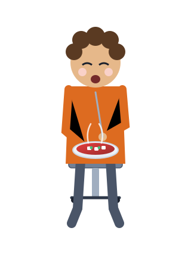
5. 安靜青年 (Quiet Youth)
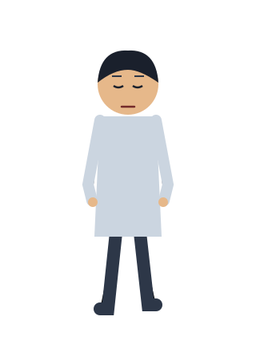
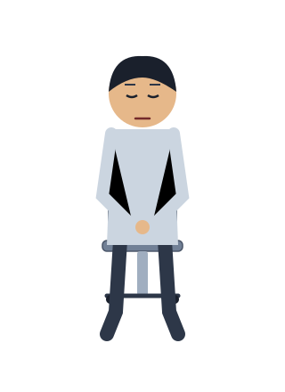
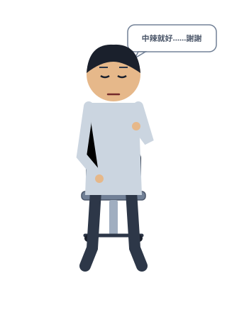
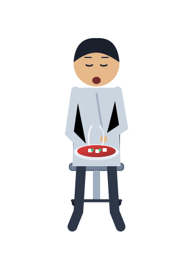
6. 熟客 (Repeat Patron)
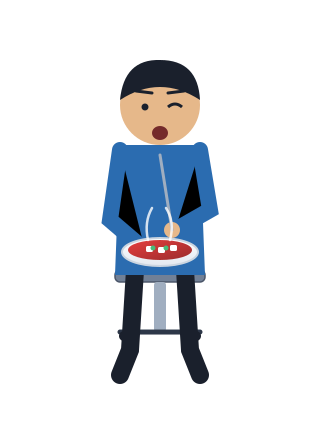
Game Portraits (Fallback & Badges)


核心美術規則： Cooking Mode 必須仍看得出是同一間診間；電腦、印表機、藥櫃、洗手台、病人椅都要「轉職」成料理工作站的一部分，不能改成普通餐廳。
Public repository boundary：公開 GitHub 只放衍生遊戲美術，不放原始真人照片。
Public repository boundary：公開 GitHub 只放衍生遊戲美術，不放原始真人照片。